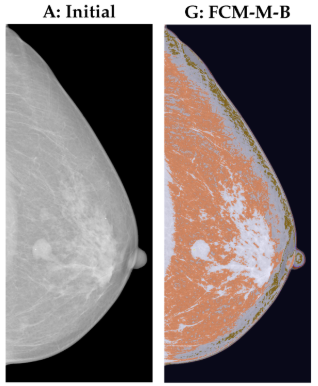
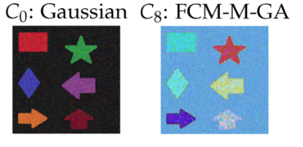

Fuzzy Medical Image Segmentation
This project performs automated, uncertainty aware mammogram segmetation using fuzzy c means clustering. It combines fuzzy clustering with with a covaraince based distance metric and various centroid initialization algorithms to produce robust tumor segmentations and pixel level uncertainty estimates. This approach is useful for faster, more interpretable pre reads of mammograms. Published in Entropy (DOI: 10.3390/e25071021). Read the paper.

Project Details
Keywords: Computer Vision, Fuzzy Clustering, Medical Imaging
Medical image segmentation supports many clinical workflows but is sensitive to initialization and model assumptions. This project improves robustness and interpretability by using fuzzy c means (FCM) to assign soft membership scores to each pixel. It then augments FCM with a Mahalanobis distance that accounts for local covariance and uses several centroid initalization algorithms: firefly, genetic algorithm, and biogeography based optimization, to avoid poor local minima. Pixel membership maps provide an interpretable measure of uncertainty that highlights ambiguous regions.
The implementation is written in Python and optimized with Numba for parallelism. It produces both hard segmented images and membership weighted visualizations. The code and install instructions are on GitHub: github.com/Danyulll/FuzzyPySeg. Key results showed improved boundary delineation and more consistent convergence when using Mahalanobis distance with centroid initialization.
For a more detailed explanation of the project please see the notebook here (TODO)
Tech stack and methods:
- Technologies: Python 3.x, NumPy, SciPy, Pillow (PIL), Numba, logging
- Algorithms: Fuzzy C Means (Euclidean and Mahalanobis), Firefly algorithm, Genetic Algorithm, Biogeography Based Optimization (BBO)
Image Gallery

This image compares the unsegmented image (left) with the Fuzzy C-Means segmentation (right) using the Mahalanobis distance and the Biogeography Based Optimizationcentroid initialization algorithm. We can clearly see a mass in the middle of the breast has been highlighted.
Here we see the algorithm recover correctly segmented shaped in the presence of Gaussian Noise. The initial image (left) should noisy shapes and the segmented image (right) shows correct recovery of shapes using FCM with a Mahalanobis distance metric and Genetic Algorithm centroid initialization.